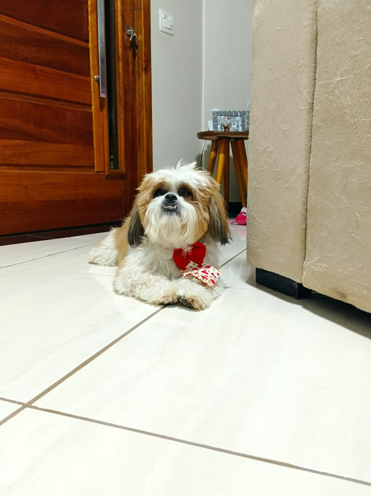

Biografia Maria Clara
Meu nome é Maria Clara Machado de Oliveira, tenho 16 anos, nasci no dia 06/05/2008 na cidade de Itapatininga no interior de São Paulo. Meus pais se chamam Adriana e Eraldo e tenho ums irmã chamada Ana, e tenho um cachorro chamado Toddy.
Estudo na escola Sesi desde os meus 5 anos de idade, hoje em dia estou no 2° ano do ensino médio e faço um curso do Senai de Desenvolvimento de Sistemas. A escola é o local em que passo a maior parte da minha vida desde quando entrei, já que aqui passo o dia estudando e com meus amigos. Além de que faço atividades extracurriculares como o volêi mas quando era menor fazia judo e luta olímpica. Hoje em dia, fora da escola goste de assistir filmes e séries, e principalmente ter um tempo de qualidade com minha fmília e amigos como sair, viajar e ver o por do sol.
